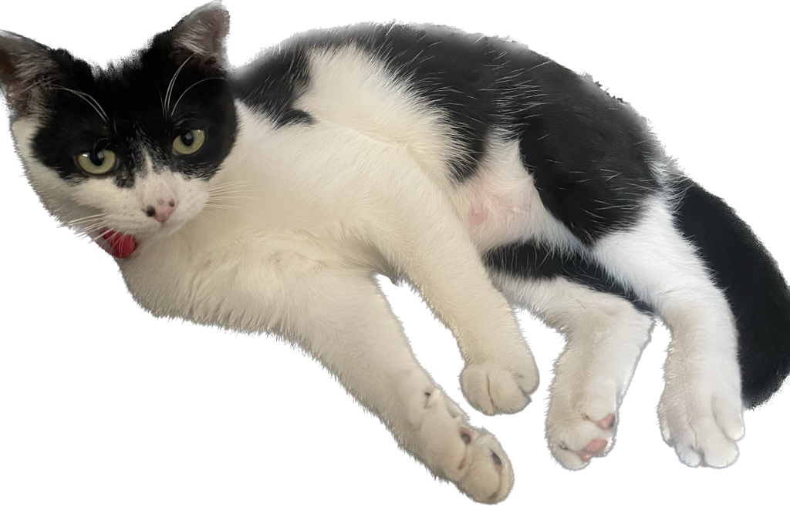

hi, im Lulu (Cat)
theme is basically black and pink. everything else is fur and chaos.
she is a little cow-pattern cat, white and black spots everywhere. born in march 2025, in the rain, in Beijing. her mom walked away, and i couldn't. so she came home with me, wrapped in a tiny towel, shaking but already bossy.
click the photo to read about the history of cow-pattern (tuxedo) cats 🐄
lulu is female, mischievous but smart. Her english is still in progress (she only knows the word kitten so far), but she's confident she'll be fluent soon.
In august 2025, I took her to New York City. we had a stop in Istanbul, twelve hours of airports, tuna snacks, and attitude. she didn't meow once, but she stared at everyone like they owed her an explanation.
favorite food? salmon and beef, though she mostly eats dry cat food because i have a schedule and she doesn't. she forgives me when i bring toys.
you can read more about her here or check out her photos. one day she'll probably write her own blog. until then, i'm her secretary.
